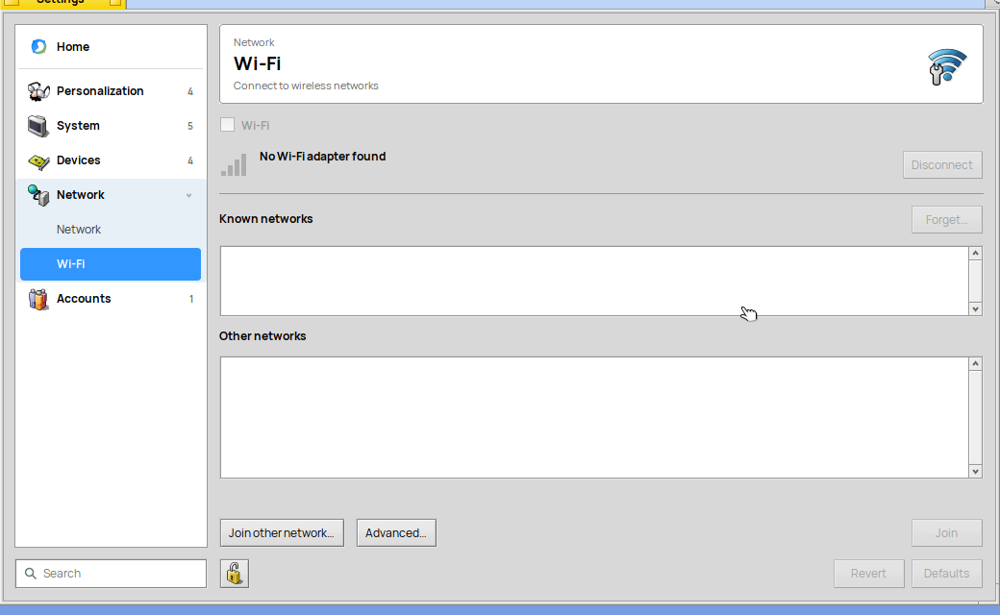

R5's libr5wifi.so is the Wi-Fi panel and the state machine behind it. The
WiFi program puts the panel in a window; the Wi-Fi page in Settings shows the same panel as its page.
A program can show it too, or drive Wi-Fi without any of the panel. The code comes from air/OS and is
MIT.
distro/wifi/lib; the WiFi program in distro/wifi/app
Contract
docs/LIBR5.md
Nothing waits on the network. All work with the adapter, net_server and
wpa_supplicant happens on the controller's own thread, with timeouts. A window or a Deskbar view only
sends messages and receives the state.
WiFiView
the panel
Declared in
<R5WiFiView.h>
Derived from
BGroupView
Power, the current network with its signal, known networks, other networks, the password prompt,
Join other network and Advanced. It starts its own WiFiController when it is
attached to a window and stops it when it is detached, so a typed password does not outlive the
view.

WiFiView(bool settingsPage = false);
false: the program's look, with the large icon and window insets, and
Join as the window's default button. true: for a Settings page, without
the icon or insets, and it leaves the window's default button alone (the password field joins on
Enter by itself).
A WiFiState; read it with state.Unarchive(*message).
kMsgWiFiJoinResult
"name", "status" (int32), and "error" (text for the person) when it failed.
WiFiState
what the controller reports
state is one of WIFI_STATE_NO_ADAPTER,
OFF, DISCONNECTED, CONNECTING,
OBTAINING_ADDRESS, NO_INTERNET and
CONNECTED. current is the network in use and
networks the list, one WiFiNetworkInfo per name:
name, bars (0 to 4), percent,
dBm, secured, saved,
connected and inRange. A mesh of many access
points with one name is one entry.
Glyphs
<R5WiFiGlyphs.h>, header only
The dot and three arcs, from the same paths as the WiFi icon. They need no library, so the Deskbar
network icon draws them without loading the controller into Deskbar.
The rules every list of networks follows, so that they all agree:
WirelessSignalBars(), WirelessSignalPercent(),
WirelessSignalDBm(), WirelessNetworkIsSecured(),
WirelessAuthenticationLabel() and
GroupWirelessNetworks(), which makes one row per name.
Saves a network with its password, so net_server joins it again after a restart. The one-argument
call stays and saves no password. Added by air/OS; R5 ships it in libbnetapi.so. In the same change,
GetNextPersistentNetwork() advances its cookie, so a loop over the saved
networks ends.
Where people see it
Settings, Network, Wi-Fi: the panel as a page, with its own icon and the preferences wrench. The
Deskbar network icon shows the arcs on a computer with a Wi-Fi adapter, and its menu has
Wi-Fi settings…, which runs Settings --page wifi. Without a
Wi-Fi adapter the icon stays the wired one. The WiFi program stays installed.
Tested. Built for x86_64 and booted in QEMU, which has no Wi-Fi
adapter. Joining a network has not run on R5 hardware yet.